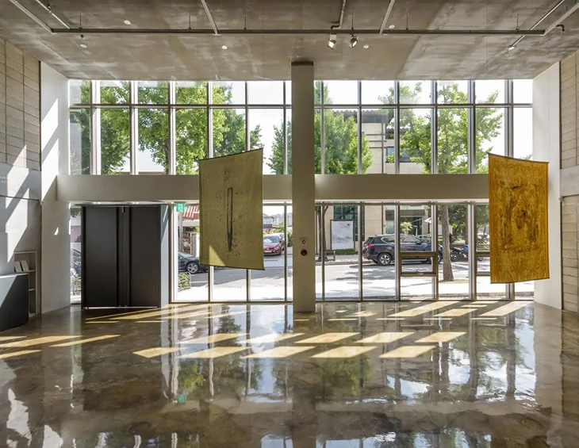
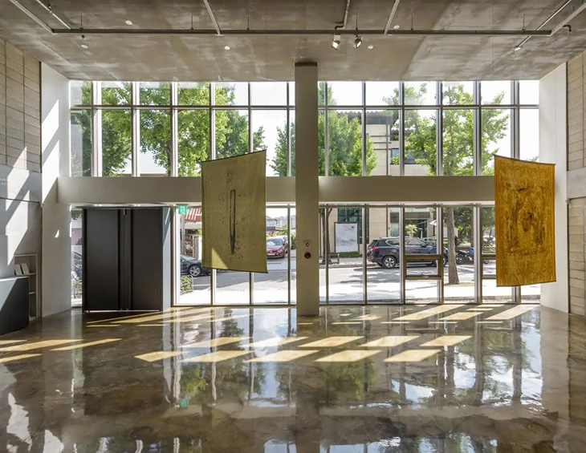

Galleries & Exhibitions
Bukchon Empathy Exhibitons
Experience the art of traditional Korean pottery in a hands-on ceramic workshop inspired by Hanok heritage
 

Modern Art Gallery '57th'
Offers a glimpse into Korea’s rich architectural heritage, highlighting the charm and craftsmanship of traditional wooden houses.

Gagosipo Art Musesum
Presents the harmony of nature and design found in traditional Korean homes through detailed displays and serene spaces